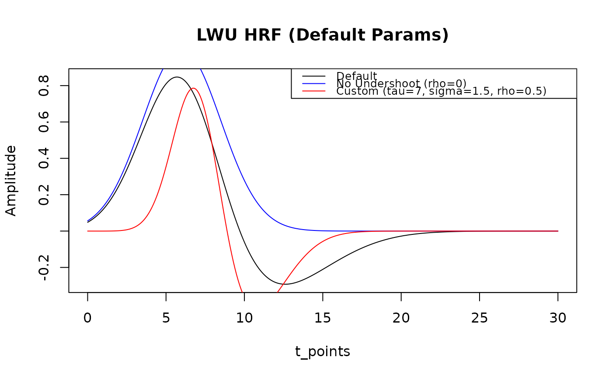
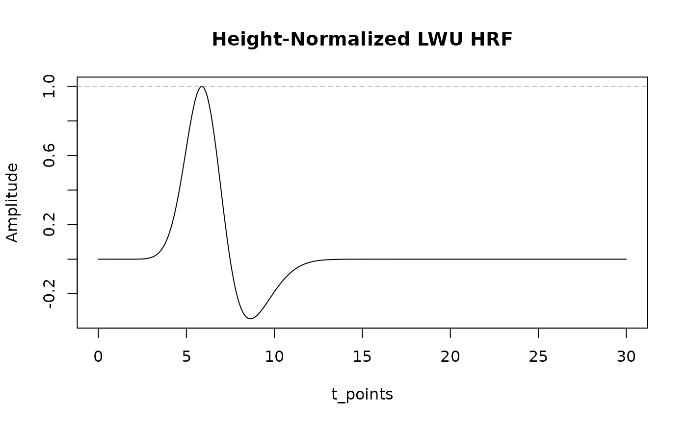

Computes the Lag-Width-Undershoot (LWU) hemodynamic response function. This model uses two Gaussian components to model the main response and an optional undershoot.
Arguments
- t
A numeric vector of time points (in seconds).
- tau
Lag of the main Gaussian component (time-to-peak of the positive lobe, in seconds). Default: 6.
- sigma
Width (standard deviation) of the main Gaussian component (in seconds). Must be > 0.05. Default: 2.5.
- rho
Amplitude of the undershoot Gaussian component, relative to the main component. Must be between 0 and 1.5. Default: 0.35.
- normalize
Character string specifying normalization type. Either "none" for no normalization (default) or "height" to scale the HRF so its maximum absolute value is 1.
Details
The LWU model formula combines a positive Gaussian peak and a negative undershoot: h(t; tau, sigma, rho) = exp(-(t-tau)^2/(2*sigma^2)) - rho * exp(-(t-tau-2*sigma)^2/(2*(1.6*sigma)^2))
See also
Other hrf_functions:
hrf_basis_lwu(),
hrf_boxcar(),
hrf_bspline(),
hrf_gamma(),
hrf_gaussian(),
hrf_inv_logit(),
hrf_mexhat(),
hrf_sine(),
hrf_spmg1(),
hrf_time(),
hrf_weighted()
Examples
t_points <- seq(0, 30, by = 0.1)
# Default LWU HRF
lwu_default <- hrf_lwu(t_points)
plot(t_points, lwu_default, type = "l", main = "LWU HRF (Default Params)", ylab = "Amplitude")
# LWU HRF with no undershoot
lwu_no_undershoot <- hrf_lwu(t_points, rho = 0)
lines(t_points, lwu_no_undershoot, col = "blue")
# LWU HRF with a wider main peak and larger undershoot
lwu_custom <- hrf_lwu(t_points, tau = 7, sigma = 1.5, rho = 0.5)
lines(t_points, lwu_custom, col = "red")
legend("topright", c("Default", "No Undershoot (rho=0)", "Custom (tau=7, sigma=1.5, rho=0.5)"),
col = c("black", "blue", "red"), lty = 1, cex = 0.8)

# Height-normalized HRF
lwu_normalized <- hrf_lwu(t_points, tau = 6, sigma = 1, rho = 0.35, normalize = "height")
plot(t_points, lwu_normalized, type = "l", main = "Height-Normalized LWU HRF", ylab = "Amplitude")
abline(h = c(-1, 1), lty = 2, col = "grey") # Max absolute value should be 1
